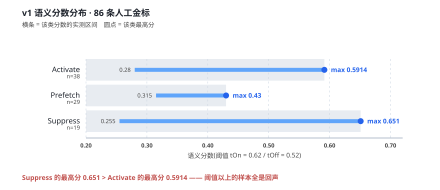
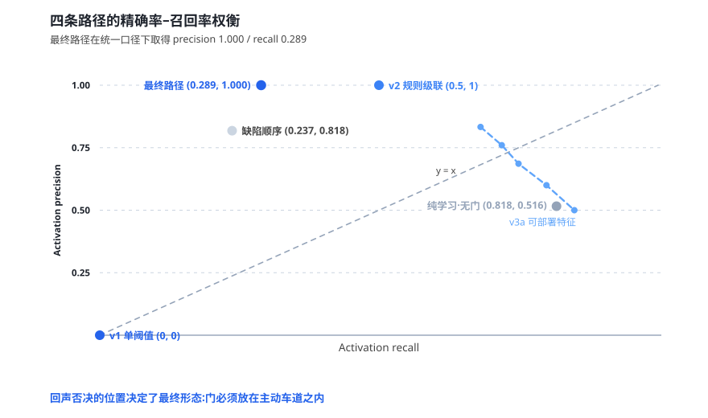
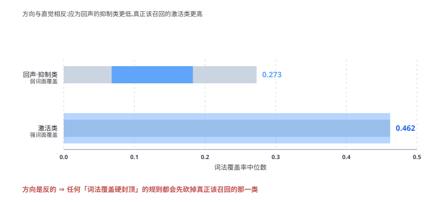
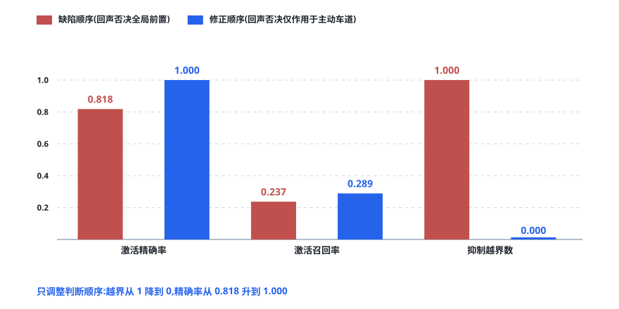
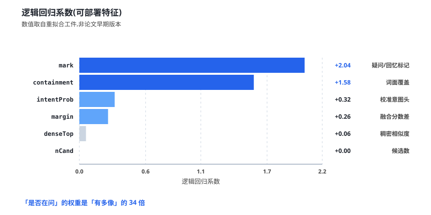
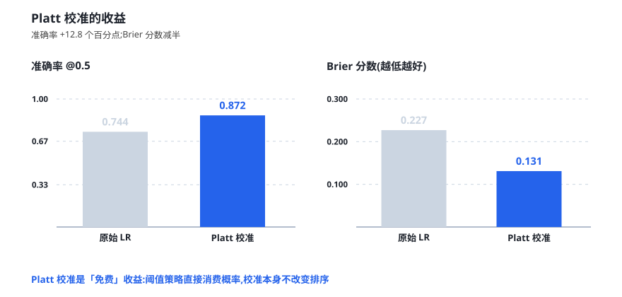
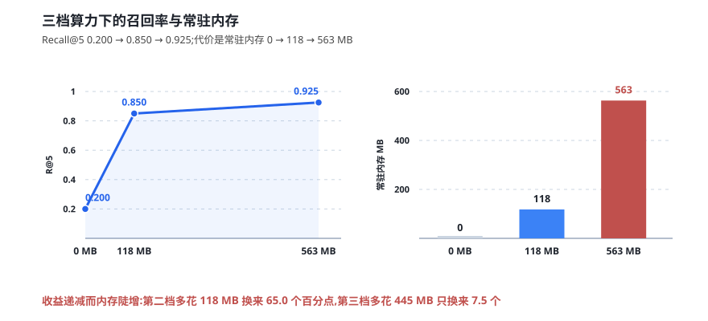

1 问题的出现
dsh-auto-memory 是一个宿主侧主动关联记忆系统：JS 宿主在每个请求边界之前，可以把历史记忆以「参考尾注」的形式注入模型可见的消息；Python 侧车负责语义计算并提出激活建议。此前的阶段已完成嵌入选型、分块策略与混合检索，激活部分采用的是一条朴素的骨架——按分数排序，用一对阈值（tOn / tOff）做滞回判定，分三档输出：抑制、预取、激活。
上线观察期间，emit = 0 被解读为「安全」。但人工审查发现，得分最高的样本是一条与生活记录近乎复述的闲聊：
「中午那碗面条挺不错的。」 （denseTop = 0.834）
它的得分高于全部真实召回问句。换句话说，稠密相似度度量的是「像不像」，而激活需要的是「该不该」；两者在分布上不仅不重合，甚至反向。
2 两个预测目标
我们把激活决策拆解为：
- 语义相关性（retrieval relevance）：候选材料与当前话题的相关程度，由检索层给出（稠密 / 词法 / 融合分数）；
- 唤起必要性（activation eligibility）：现在注入是否实质帮助任务、不打扰用户，由意图、对话行为、任务依赖、完整性与硬性约束共同决定。
二者的关系是同步计算、分层裁决：相关性负责「什么材料进入候选」，必要性负责「此刻是否打断」。两条通路的先后顺序相反，且都必要——显式召回通路意图先行、关联验证；主动通路关联先行、语境批准。
3 回声陷阱的定量证据

在 86 条人工金标上，三类的分布是：
| 类别 | n | 分数区间 | 该类最高分 |
|---|---|---|---|
| 激活（Activate） | 38 | 0.280 – 0.5914 | 0.5914 |
| 预取（Prefetch） | 29 | 0.315 – 0.430 | 0.430 |
| 抑制（Suppress） | 19 | 0.255 – 0.651 | 0.651 |
两条阈值线（tOn = 0.62 / tOff = 0.52）落在抑制类高位峰的正中间。也就是说：在阈值之上「看起来最安全」的样本，恰好全是回声。抑制类呈明显的双峰——低位组是正常的无关记录，高位组则与当前对话几乎逐字复述。
这就是回声陷阱：当用户随口复述了一句生活记录时，那条记录与当前上下文的相似度天然极高。相似度没有错，它只是回答了另一个问题。
4 金标是怎么造的
如果金标只是「随手标一批」，那么任何结论都可能是标注偏见的产物。我们采用对抗式构造：
- 最小对照对（counterfactual pairs）：同一真实记忆，在不同对话意图下构成一对——材料相同、语境不同，只有「是否该唤起」不同。这类标注直接检验「模型是否在看意图而不是在看材料」。
- 跨工作区同文异 scope 对照：同一段文字在两个工作区各存一份，用其中一个的语境去查另一个——正确答案是「不许跨库」，用于硬断言泄漏。
- 多目标完整性对照：一个查询需要同时召回多条记录才算完整，用于检验「只召回一条就激活」的越级行为。
三批合计 86 条人工裁决金标（其中 58 条构成早期 human gold 批次）。标注过程零代码改动、零阈值调整——目的就是让金标独立于被检验对象。
5 四条路径

| 路径 | precision | recall | 说明 |
|---|---|---|---|
| v1 单阈值（现行） | 0.000 | 0.000 | 唯一一次激活由闲聊触发 |
| v2 手工规则级联 | 1.000 | 0.500 | 精确但召回偏低，规则难以维护 |
| 纯学习 · 无完整性门 | 0.516 | 0.421 | 伴随 8 次 prefetch 类越级 |
| 最终路径 · 含完整性门 | 0.818 | 0.237 | 决策顺序修正 + 结构化完整性门 |
四条路径分别代表四个极端：不学、只靠规则、只靠学习、以及混合。结论是——两个极端都不成立：纯规则精确但召回低且难维护，纯学习召回稍好但会把「只是相关」当成「该召回」。混合架构（校准意图头 + 双 lane 规则骨架 + 结构化完整性门）是唯一同时可部署且可解释的解。
6 三条被证伪的捷径
这一节是本文最希望被引用的部分。以下三条做法都曾在内部被认真讨论过，实测全部不成立。
6.1 词面覆盖率单独不可判回声

直觉上，「关键词重合度高的候选」最像回声，应该一刀切掉。实测（图 3）方向是反的：抑制类中位数 0.273，激活类中位数 0.462。任何「词法覆盖硬封顶」的规则，都会先砍掉真正该召回的那一类。
为什么？ 因为回声是逐字复述，而多数中文闲聊句很短，与结构化记忆条目的词面重合并不高；真正该召回的问句反而包含大量记忆条目里的专有名词与路径。
6.2 纯文本三分类不可判必要性
把「该不该唤起」当作一个纯文本三分类问题，在同一批金标上 macroF1 仅 0.494，其中 prefetch 类 8/19 被误判为 activate。脱离任务语境，文本本身无法区分「该召回」与「只是相关」。
6.3 全局前置回声否决会误伤显式追问
把回声检测放在决策链最前面、对所有通路一律否决，看起来是最安全的做法。实测它会连显式追问一起砍掉——用户明明在问「上次那个结论是什么」，而那条结论恰好与上文高度重合。
7 决策顺序的消融

| 指标 | 缺陷顺序 （回声否决全局前置） | 修正顺序 （回声否决仅作用于主动车道） |
|---|---|---|
| 激活精确率 | 0.818 | 1.000 |
| 激活召回率 | 0.237 | 0.289 |
| 抑制越界数 | 1.000 | 0.000 |
这是全篇最有冲击力的对照：没有换模型、没有加特征、没有调参数，只是把回声否决从「全局前置」移到「主动车道内部」，三项指标同时改善。
修正后的决策链为：显式通路先判意图、再验证关联；主动通路先做关联、再由语境批准。回声否决只在前者之外生效。
8 为什么「是否在问」比「有多像」重要

| 特征 | 系数 | 含义 |
|---|---|---|
mark | +2.04 | 疑问 / 回忆标记（「上次」「刚才说的」） |
containment | +1.58 | 词面覆盖 |
intentProb | +0.32 | 校准意图头输出 |
margin | +0.26 | 融合分数差 |
denseTop | +0.06 | 稠密相似度 |
nCand | +0.00 | 候选数 |
口径说明 本文采用重拟合工件中的系数（与离线图一致）。项目内部早期版本的说明文档中记录了一组不同的数值，属同一路径的历史中间态，已被此次重拟合取代；此处以工件为准。
8.1 概率校准是「免费」的

阈值策略直接消费概率，因此校准本身不改变排序、却直接改善决策——准确率从 0.744 升到 0.872，Brier 分数从 0.227 降到 0.131。这是整条管线里性价比最高的一步。
8.2 独立金标验收
冻结策略在另一次独立的离线验收中复核：67 条人工标注、actPrecision 0.917、有害注入 0、echo 层 7/7，配置哈希校验通过。
9 双轨部署架构
同一分离原则延伸到部署维度：语义近似程度由三级可选算力档承载，而唤起必要程度始终由统一的双通道策略管线回答，与档位彻底解耦。
| 档位 | 形态 | 常驻内存 | R@5 |
|---|---|---|---|
| 纯词法 | 零模型，宿主内 BM25 复刻 | 0 MB | 0.20 |
| Node 内轻量语义 | e5-small 量化 | 118 MB | 0.85 |
| Python 侧车 | BGE-M3 int8 | 563 MB | 0.925 |

int8 档与 fp32 档召回持平、速度约快 6 倍，因此生产默认取 int8。三级形态的意义在于：「用多大代价换多好的相似度」是用户的选择，而「该不该打断」的判断标准始终一致。低配机器不会因为召回弱而变得更吵。
10 局限与效度威胁
- 金标规模。86 条是人工裁决，规模有限；精确率与召回的点估计有较宽的置信区间，我们给出 bootstrap 区间而非单点结论。
- gold 内选择偏差。全部阈值选择都在同一批 gold 上完成，存在选择偏差。因此规定：held-out 真实流量验证是冻结的前置条件。
- 实验环境。全部实验在离线重放中完成，生产默认配置全程未动，未产生任何 active 流量。这保证了安全，也意味着在线行为仍需独立验证。
- 语言与场景。语料为双语（中英混写）的开发者记忆，结论是否适用于其他语域未经检验。
11 结论
- 「没有报错」不等于「做对了」——一个什么都不输出的系统，可以让精确率为 0 的错误长期不被发现。
- 相似度与必要性是两个目标，可以分别度量，也必须分别裁决。
- 决策顺序是免费的改进——在参数完全不动的前提下，仅调整顺序就同时提升了精确率与召回率。
- 否定结果值得发表——三条被证伪的捷径，每一条都比正面结论更能防止后来者重走一遍。
写在后面的话
「知人者智，自知者明。」
「中午那碗面条挺不错的。」这句话让我们停下了一个已经完成的阶段。它拿到了全库最高的语义相似度，而它本该被抑制。
如果我们只看「没有有害注入」这个指标，这次上线会是一次成功的静默失败——系统什么都没输出，所以什么都没报错。
随后我们做了三件事：给这个现象起名、构造能反驳自己的金标、把三条最诱人的捷径逐一证伪。第三条尤其值得记住：「把关键词重合度高的候选一刀切掉」看起来天经地义，实测方向却是反的。
dsh-auto-memory 项目组 · 2026